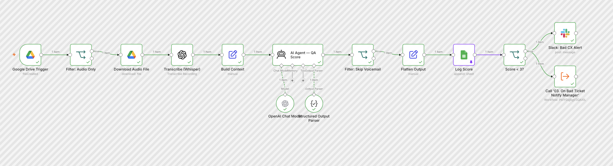
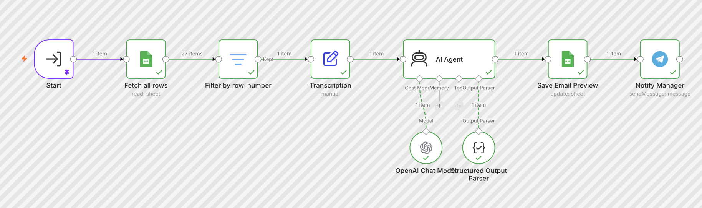
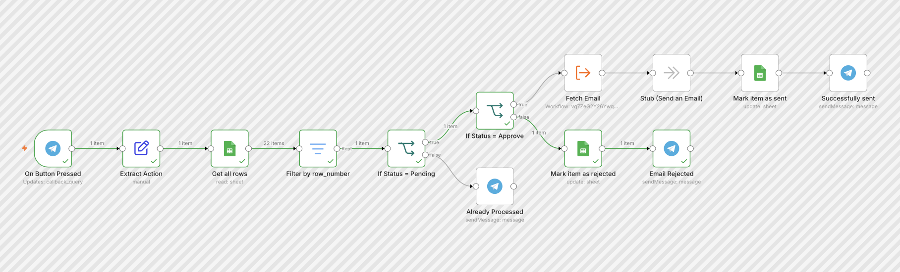
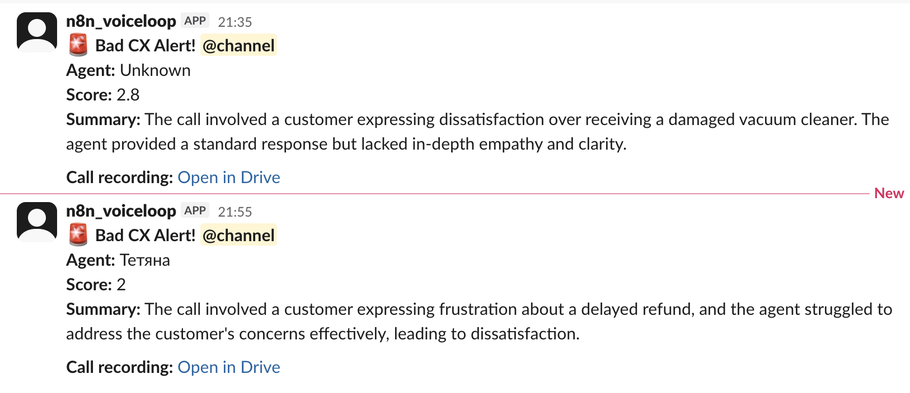
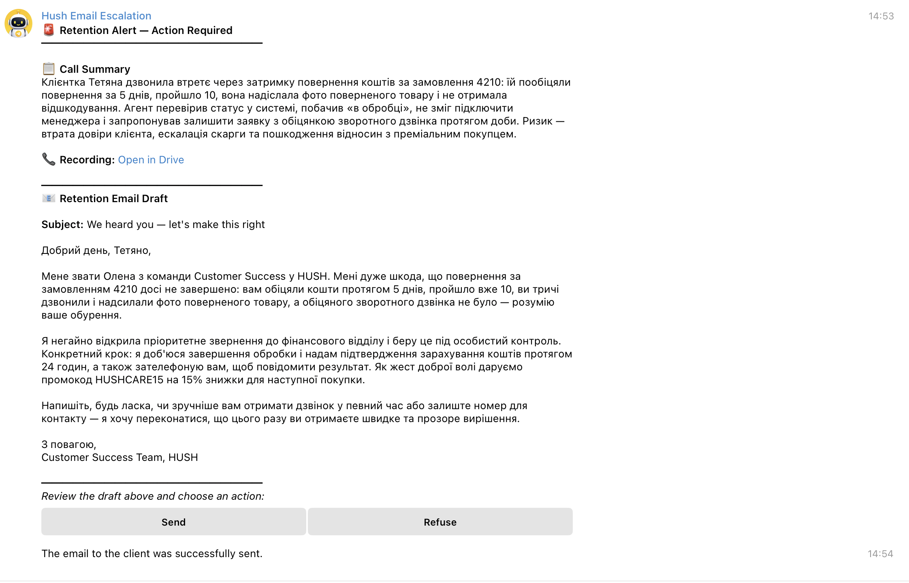
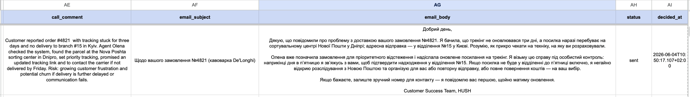

Automated Call Scoring, Agent Coaching & Client Retention for a Premium Bag Brand
Context
Company: HUSH - B2C premium bag e-commerce
Industry: Online Retail (Fashion Accessories)
Target clients: End consumers purchasing premium bags online
Support volume: Inbound customer service calls (daily)
Team: Customer service agents + 1 manager
Core problem: Zero visibility into call quality - no QA, no coaching, no retention follow-up
Problem
| Metric | Value | Issue |
|---|---|---|
| Call QA coverage | 0% | No calls reviewed systematically |
| Agent feedback | None | Coaching was ad-hoc and reactive |
| Bad call detection | Never | Poor calls went completely unnoticed |
| Client retention | None | At-risk customers never followed up |
| Manager time on QA | 0 (not done) | Too time-consuming to do manually |
The customer service team handled inbound calls daily with no quality control in place. Managers had no way to know which calls went badly, which agents needed coaching, or which customers were at risk of churning. Every poor call was a silent loss - no detection, no recovery.
Solution
Built a 4-workflow AI automation system that transcribes, scores, alerts, and recovers:
Call recording → Google Drive
↓
WF01: Transcribe & Score
↓
Filter: Audio → Whisper → GPT QA Score
↓
Log to Google Sheets
↓
Score < 3.0?
↓
┌─────────────┴─────────────┐
YES NO
Slack Alert End
+ Call WF03
↓
WF03: Draft Retention Email
↓
AI analyzes call → drafts email
↓
Save to Sheets → Telegram to Manager
↓
WF04: Manager Decision (Telegram buttons)
↓
┌────┴────┐
Send Refuse
↓ ↓
WF02: Mark as
Get email Rejected
+ SendWF01 - Call QA: Transcribe & Score
Picks up every new call recording automatically. Transcribes using Whisper, scores the agent across 8 QA criteria (1-5 scale) using GPT-5-mini, logs full results to Google Sheets, and fires a Slack alert for any call scoring below 3.0.
WF02 - Call Recording URL to Email
Sub-workflow triggered on manager approval. Extracts the Google Drive file ID from the recording URL and retrieves the client email for sending the retention email.
WF03 - On Bad Call: Notify Manager
Triggered automatically when score < 3.0. Reads the call transcription, runs a second AI agent to draft a personalized retention email and write a 2-3 sentence call summary for the manager. Sends everything to the manager via Telegram with Send/Refuse buttons.
WF04 - On Manager Decision: Send Email
Handles the manager’s Telegram button press. Checks if the record is still pending (duplicate protection), routes to approve or reject, updates status in Google Sheets, and confirms the decision back to the manager.
Process
1. QA Scoring Framework
- 8 criteria scored 1-5 by GPT-5-mini
- Score = average of all 8 criteria (1.0-5.0)
- Structured Output Parser enforces strict JSON - auto-retry on malformed output
- Voicemail and silent recordings filtered automatically (score=0, skipped)
- Calls in Ukrainian, English, or mixed language fully supported
2. Scoring Criteria
| Criterion | What’s Evaluated |
|---|---|
| Greetings | Professional opening, self-identification |
| Active Listening | Let customer speak, paraphrasing |
| Needs Discovery | Clarifying questions before solution |
| Empathy | Acknowledging emotions and frustration |
| Expertise | Product/process knowledge demonstrated |
| Clear Solution | Concrete resolution or next step given |
| Next Steps | Timeline and ownership confirmed |
| Closing | Professional, positive call ending |
3. Alert & Retention Flow
| Score | Trigger | Action |
|---|---|---|
| ≥ 3.0 | Good/Fair call | Log to Sheets only |
| < 3.0 | Poor call | Slack alert + AI retention email draft + Telegram to manager |
4. n8n Workflow Architecture
| Workflow | Trigger | Function |
|---|---|---|
| WF01 - Call QA: Transcribe & Score | Google Drive (new file) | Transcribe → Score → Log → Alert |
| WF02 - Recording URL to Email | Sub-workflow call | Extract file ID → Get client email |
| WF03 - On Bad Call: Notify Manager | Sub-workflow call | Draft email → Save → Telegram |
| WF04 - On Manager Decision | Telegram button press | Approve/Reject → Update Sheets → Confirm |
5. Manager Approval Flow
| Action | Trigger | Result |
|---|---|---|
| Send | Manager taps ✅ Send Email | Email sent, status = sent, timestamp logged |
| Refuse | Manager taps ❌ Don’t Send | Status = rejected, manager notified |
| Double tap | Button pressed again | “Already processed” message, no action |
Results
| Metric | Before | After | Change |
|---|---|---|---|
| Call QA coverage | 0% | 100% | ↑ Full coverage |
| Time to detect bad call | Never | < 1 hour | New |
| Manager response to bad call | Never | < 5 minutes | New |
| Retention email draft time | N/A (not done) | Automatic | New |
| Agent feedback quality | Ad-hoc | Structured, per-criterion | ↑ Systematic |
| Coaching data available | None | Every call logged | New |
Tech Stack
- n8n (self-hosted, Docker + ngrok) - workflow automation engine
- OpenAI Whisper - call transcription
- GPT-5-mini - QA scoring + retention email drafting
- Google Drive - call recording storage and trigger (Phase 1)
- Google Sheets - central data store for scores, drafts, and decisions
- Slack - real-time bad CX alerts to team channel
- Telegram Bot API - manager approval interface with inline buttons
What Works
- Full end-to-end automation: recording uploaded → transcribed → scored → alerted → email drafted → manager approves → sent
- 100% call QA coverage with zero manual effort
- Voicemail filtering - silent recordings never pollute the QA log
- Structured JSON output enforced - AI retries automatically on malformed responses
- Duplicate-click protection - manager can’t accidentally send the same email twice
- Mixed language support - Ukrainian, English, or mixed calls all handled correctly
- Full audit trail - every score, draft, decision, and timestamp logged to Sheets
What Can Be Improved
- Call trigger - Google Drive upload is manual; Zadarma webhook will automate this completely
- Client email - currently retrieved from recording URL; HubSpot lookup by phone will make it fully dynamic
- Agent dashboard - Sheets log is functional but a Looker/Data Studio dashboard would give better coaching visibility
- Score threshold - 3.0 is conservative; can be raised to 3.5 for stricter QA standards
Phase 2 - Production Architecture (Planned)
Pending client approval:
- Zadarma SIP webhook → replaces Google Drive trigger, fires automatically when call ends
- HubSpot CRM → contact lookup by phone number, call activity logging per agent
- Agent performance dashboard → weekly coaching report per agent from Sheets data
Screenshots
WF01 - Call QA: Transcribe & Score canvas

WF03 - On Bad Call: Notify Manager canvas

WF04 - On Manager Decision canvas

Slack - Bad CX Alert

Telegram - Manager Retention Alert with buttons

Google Sheets - Email Draft + Status
